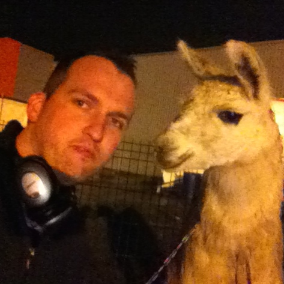

🌌 ЗОЛОТАЯ ЭРА ШАБЛОНОВ: 2010-е 🌌
Эпоха Rage-комиксов, шрифта Impact, расцвета пабликов ВКонтакте и Reddit!
Serge (llama)

Серж лама (29 червня 2005 – 2020) був ламою в цирку Франко-Італійський Джона Ботура і інтернет-мемом. Серж був названий на честь французького співака Сержа Лама, який назвав вибір імені геніальним.